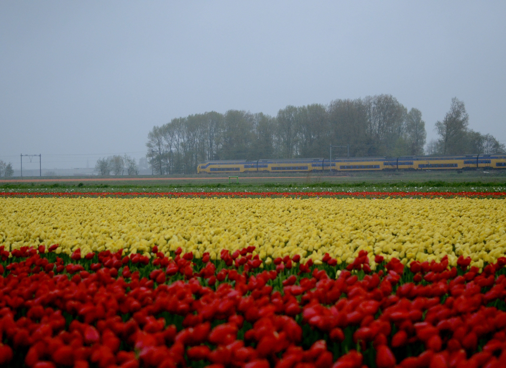
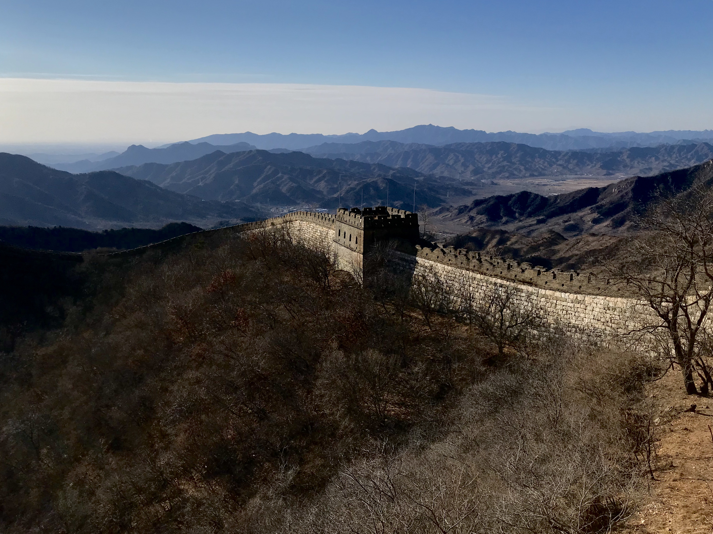
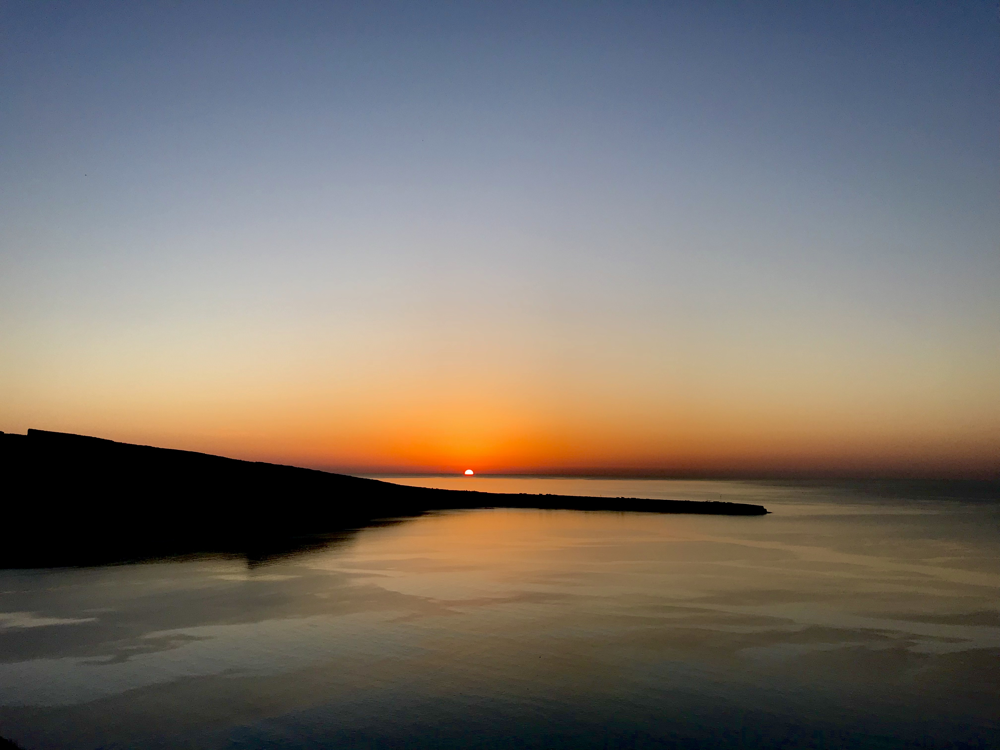
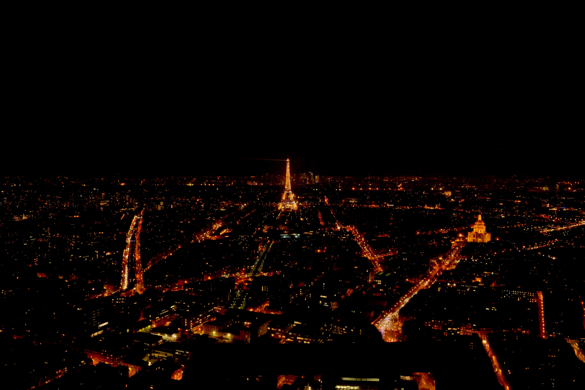
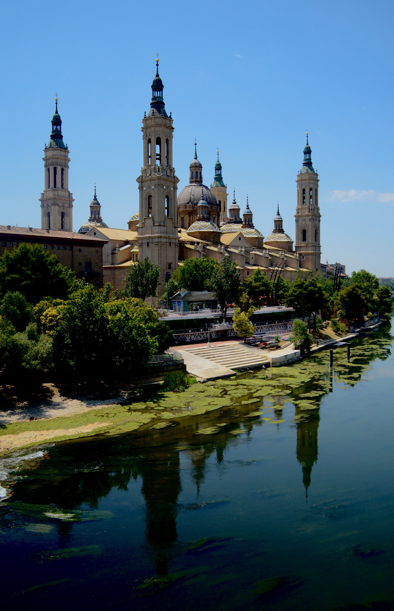

Landscape/architechture photography
Witte huis, Rotterdam
Shot on: Sony a6400. Settings: f/3.5, 1/2000s, ISO 200.
Cube houses, Rotterdam
Shot on: Sony a6400. Settings: f/11, 1/125s, ISO 200.
De Biesbosch National Park, Dordrecht
Shot on: Sony a6400. Settings: f/3.5, 1/1250s, ISO 200.
Early 2021 snow days of Rotterdam
Shot on: Sony a6400. Settings: f/5.6, 1/100s, ISO 200.
Port, Rotterdam
Shot on: Sony a6400. Settings: f/5.6, 1/125s, ISO 200.
Water taxi at Willemsbrug, Rotterdam
Shot on: Sony a6400. Settings: f/11, 1/250s, ISO 100.
De Heen, Brabant
Shot on: Sony a6400. Settings: f/11, 1/80s, ISO 100.
Erasmusburg, Rotterdam

Shot on: Sony a6400. Settings: f/3.5, 1/3s, ISO 1000.
Karpendonkse, Eindhoven

Shot on: Nikon D3100. Settings: f/10, 1/200s, ISO 2000.
Keukenhof, Holland
Shot on: Nikon D3100. Settings: f/1.8, 1/3200s, ISO 1600.
Greatwall of China
Shot on: iPhone 7. Settings: f/1.8, 1/4.5s, ISO 20.
Sunset at Santorini
Shot on: iPhone 7. Settings: f/1.8, 1/833s, ISO 20
Night lights of Paris
Shot on: Nikon D3100. Settings: f/11, 1/6s, ISO 3200.
Zaragoza, Spain
Shot on: Nikon D3100. Settings: f/3.5, 1/4000s, ISO 450.
Tower bridge, London

Shot on: Nikon D3100. Settings: f/4, 1/80s, ISO 3200.